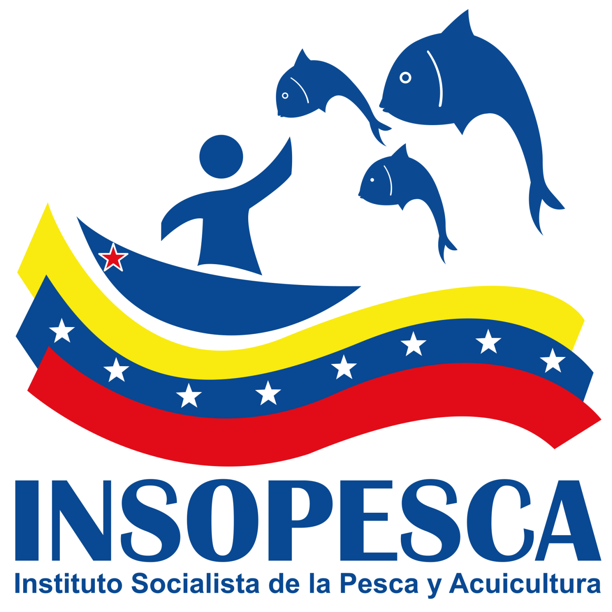
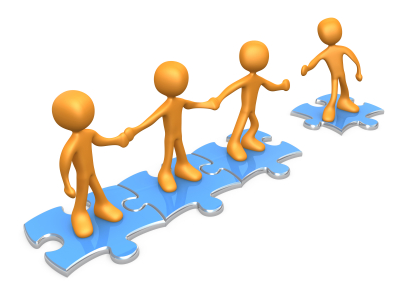
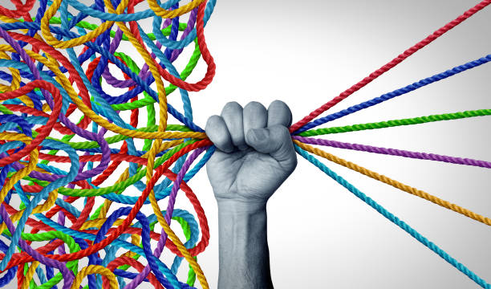

Ponentes:
🧑🏫 Kelly Rodríguez
🧑🏫 Emmanuel Manosalva

Transformando la gestión con principios bíblicos.
Nuestra labor no es una imposición, es un ministerio de ayuda. Servir es reflejar la humildad de Jesús.
El autocontrol es clave. Responder con suavidad, incluso ante la queja del usuario, mantiene la paz en la inspectoría.

La excelencia consiste en orientar con paciencia, facilitando el proceso del pescador más allá de lo mínimo requerido.

La organización de nuestra inspectoría es la base de la estabilidad económica de nuestra comunidad pesquera.
Nos comprometemos a:
Introduce la clave para avanzar: